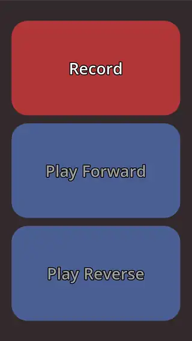

Record Play Reverse
صوت وفيديو وموسيقى
A very simple audio toy that lets you record audio, and play it back forward, or reversed. I built this app out of spite after using another audio reversing app that had very intrusive ads. It consists of a single Godot UI scene, with a few buttons and a couple of AudioStreamPlayer nodes.
✓ ترخيص مفتوح (GPL-3.0-only) · آخر تحديث: 2026-06-10
1.3الإصدار
48.8 MBالحجم
GPL-3.0-onlyالرخصة
Open in Kanzتحميل APK (48.8 MB)
Download APK
SHA-256: c89f697766784dda1af3d8c2bd83faade0f4343c41f7ad56e5cf91d83aca2bcc

تطبيقات تانية لنفس المطوّر (2)
More apps from this developer: me.proton
امسح الكود لفتح صفحة التطبيق
Scan to open this app page
لو كنز مش متثبت عندك: نزّل متجر كنز.
Not installed? Get the Kanz store.